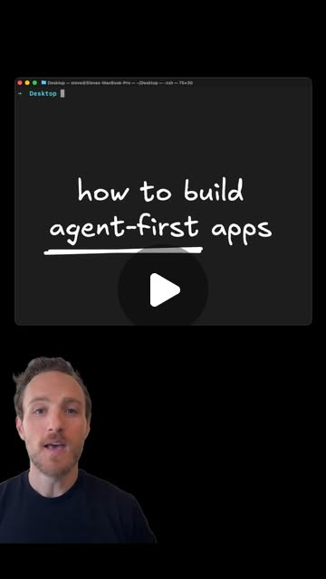

Instagram Reel

How to build agent-first apps
video transcript (enriched by ClaudeClaw)
Summary
[CAPTION]
How to build agent-first apps
[VIDEO]
In 2026, you shouldn't be building a single application that's not agent first. But what does that mean and how do I do it.
[CAPTION]
How to build agent-first apps
[VIDEO]
In 2026, you shouldn't be building a single application that's not agent first. But what does that mean and how do I do it? Let me show you. To make this easy, I'm going to use the agent native framework as a starting point, copying the command from the homepage and running it in my terminal. Once the starting point's created, we'll CD into our app and use Claude or whatever you prefer to add our first prompt. To make it a to-do app, I'll just say make this a to-do app. Now that cloud is done, we have this. Looks like a to-do app, it works like a to-do app, and it seems basic on the surface. Here's the important part. By default in this application, anything the UI can do, an agent can do. So for instance, I can say add a to-do to make my demo. Plug in any model that you want, any keys that you want. And there we go. The agent and the UI are always in sync. If I update the UI, the agents are where, and when I send commands to the agents, the changes reflect instantly in the UI. And so that means if you want a completely agent first experience, you can just use the chat. From the chat, you can have it bring UI to you. For instance, show me my to-dos. And there we go. There's my same to-do list in line, fully interactive, the same way I've always done it. The agent can operate anything. I can say take me to the to-dos page. And it'll do that in a cool way that morphs me from the chat on the side to the chat as the focus. But you also don't have to use the built-in chat at all. You can put /mcp at the end of any agent native app URL and connect it to any agent. Now I can manage my tasks from Claude and say things like mark my demo to do as done. Makes the update, the app updates in real time. Anyway, I'm excited about the agent native framework. If you want to try it now, you can do it on my GitHub. Thanks for watching.
View original on Instagram Reel →